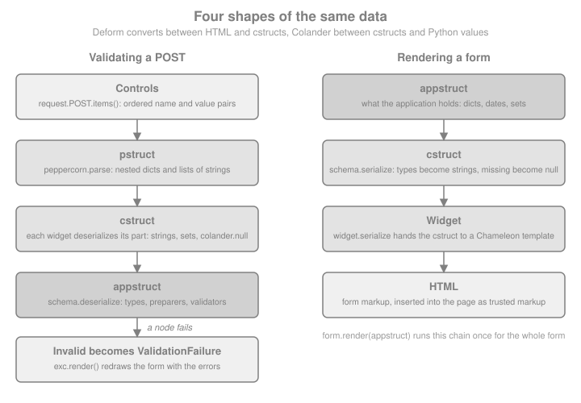

Forms with Deform & Colander
|
This content was generated with the assistance of AI and should be verified against the official documentation before being relied on in production. |
This page is written against Pyramid 2.1 (released 2026-03-11), Deform 3.0.1 (released 2026-02-26) and Colander 2.0 (uploaded to PyPI on 2023-01-03), checked on 2026-10-07. Pyramid 2.1 supports Python 3.10 to 3.14; the examples were executed on Python 3.13 with pyramid_jinja2 2.10.1, WebTest 3.0.7, Chameleon 4.6.0, Peppercorn 0.6, WTForms 3.2.2 and Pydantic 2.13.5. The running scenario is Bookshelf Shelves: public shelves owned by users, each holding books. This page adds the forms that create and edit those books, and shows the whole cycle of rendering a form, receiving the post, validating it and redisplaying it with errors.
Pyramid itself has no form library. A view receives request.POST, a WebOb multidict (see
Request & Response), and what to do with it is the
application’s decision. The Pylons Project, the group that maintains Pyramid, also maintains two companion libraries
that most Pyramid tutorials assume: Colander, which defines a schema and turns submitted strings into validated
Python values, and Deform, which renders a Colander schema as HTML and feeds the browser’s post back to it. They are
independent of Pyramid (Deform only needs a request object to read the post from), but they are designed together and
this page covers them as a pair. The same job is done by Flask-WTF in the sibling framework section
(Forms with Flask-WTF), by Pydantic models in FastAPI
(FastAPI introduction and architecture) and by the form
classes of Django (Django introduction and architecture); the
last section of this page compares them.
The Pieces and the Four Data Shapes
A form submission passes through several representations of the same data. Both libraries use a fixed vocabulary for them, and reading the error messages of either library becomes much easier once it is familiar.
| Shape | What it is | Produced by |
|---|---|---|
Controls |
The ordered list of |
The browser. |
|
A nested structure of dictionaries and lists of strings, rebuilt from the flat controls with the |
Peppercorn, called by |
|
The "colander structure": still strings, but shaped like the schema, with |
Each widget’s |
|
The "application structure": real Python values such as |
Colander’s |
Deform therefore owns the conversion between HTML and cstructs, and Colander owns the conversion between cstructs and appstructs, including all validation. Neither library does the other’s job, which is why a Colander schema is also useful on its own (the JSON API example at the end of the page uses it without Deform).

Deform renders every widget with Chameleon templates, whichever template language the surrounding pages use. The
output of form.render() is a string of HTML that the page template inserts without escaping, which is the one place
where the page trusts markup; the security section below explains why that is safe.
Installing and Maintenance Status
pip install pyramid pyramid_jinja2 deform colander waitressDeform 3.0.1 pulls in Colander, Chameleon, Peppercorn, iso8601, translationstring and zope.deprecation. Its
requirements pin setuptools<81, because deform/template.py and the documentation recipes still import
pkg_resources; Pyramid 2.1 itself needs setuptools<82 for the same reason. Importing Deform therefore prints a
pkg_resources is deprecated warning on current setuptools, and a fresh environment must not install setuptools 81 or
newer. Both pins are expected to disappear in a later release of each package.
| Package | Latest release | Status |
|---|---|---|
Colander |
2.0 (PyPI upload 2023-01-03) |
Stable and small; its change log lists an unreleased 2.1 that adds Python 3.12 and drops 3.7. Requires Python 3.7 or newer. |
Deform |
3.0.1 (2026-02-26) |
3.0.0 (the same month) moved the bundled CSS to Bootstrap 5, added HTML5 validation and updated the bundled TinyMCE, and dropped Python 3.6 and 3.7. The bundled jQuery is still 2.0.3. |
Peppercorn |
0.6 (2018-08-24) |
Tiny and finished; it only implements the |
Release activity is low but real, which fits the whole Pyramid ecosystem. The practical consequence is that Deform’s JavaScript (jQuery 2.0.3, the vendored date pickers and editors) is old: it works, but a project that cares about front-end dependency audits should plan to serve its own versions or to render retail (see below) and keep only what it needs.
Colander Schemas
A Colander schema is a tree of SchemaNode objects. Each node has a type that knows how to convert between
strings and a Python value (String, Integer, Date, and so on), and optional arguments that say what to do when
the value is absent, how to clean it and how to validate it. A schema is usually written as a class, where the
attribute name becomes the node name.
import colander
def strip_text(value):
return value.strip() if isinstance(value, str) else value
class BookSchema(colander.Schema):
title = colander.SchemaNode(colander.String(), validator=colander.Length(min=1, max=120))
author = colander.SchemaNode(colander.String(), preparer=strip_text)
year = colander.SchemaNode(
colander.Integer(), validator=colander.Range(1450, 2100), missing=None
)
book_schema = BookSchema()
appstruct = book_schema.deserialize(
{"title": "Dune", "author": " Frank Herbert ", "year": "1965"}
)
print(appstruct)
try:
book_schema.deserialize({"title": "", "author": "Anon", "year": "abc"})
except colander.Invalid as exc:
print(exc.asdict()){'title': 'Dune', 'author': 'Frank Herbert', 'year': 1965}
{'title': 'Required', 'year': '"abc" is not a number'}
Source: Colander Basics
colander.Schema is a synonym of colander.MappingSchema, which creates a node of type colander.Mapping; the
sibling classes colander.TupleSchema and colander.SequenceSchema create a Tuple and a Sequence node. A schema
can also be built without a class statement by creating a SchemaNode and calling its add method, with the same
result. The class style is more common because it reads like a model and supports inheritance, which the CSRF schema
below uses.
Two things the example shows deserve attention. Deserialization takes the cstruct apart node by node and raises a
single colander.Invalid that carries every error, not just the first, so a form can mark all bad fields at once.
The blank title did not reach the Length validator: an empty string deserializes to colander.null, which is
reported as Required before any validator runs. The preparer ran before the validator:
preparer is the hook for normalising input (stripping whitespace, adding a URL scheme, sanitising HTML) and it runs
only on deserialization. A preparer is also called with colander.null when the input is blank, so it must pass
non-string values through, as strip_text does; a bare lambda value: value.strip() raises AttributeError on a
blank field.
Node Arguments
| Argument | Meaning |
|---|---|
|
The schema type instance, such as |
|
A callable |
|
A callable (or list of callables) that receives the deserialized value and returns the value to validate. |
|
The appstruct value to use when the node is absent from the input. Without it the node is required and |
|
The cstruct value used when serializing a node that has no value, which is how an empty "add" form gets its initial values. Without it the node serializes as |
|
Metadata for higher-level tools. Deform shows them as the label and the help text. The title defaults to a capitalised version of the name. |
|
The key in the parent mapping. Set automatically for class attributes. |
|
Not interpreted by Colander. Colander attaches any extra keyword argument to the node, and Deform reads |
|
Positions a node among inherited nodes in a mapping schema that extends another one. |
Source: Colander: Schema Node Objects
Types
| Type | Appstruct | Notes |
|---|---|---|
|
|
An empty string deserializes to |
|
|
|
|
|
Recognises |
|
|
Parsed with iso8601; a naive |
|
|
A set of strings from multi-valued controls such as checkboxes and multiple selects. |
|
a member of an |
|
|
|
Structural types; their children are the nodes added to them. A |
|
any importable object |
Resolves a dotted name. Only use it on trusted input, since it imports what the string names. |
Source: Colander: API Documentation
import datetime
import enum
class Status(enum.Enum):
WANT = "want"
READING = "reading"
READ = "read"
class ReadingSchema(colander.Schema):
status = colander.SchemaNode(colander.Enum(Status, attr="value"))
started = colander.SchemaNode(colander.Date())
tags = colander.SchemaNode(colander.Set())
finished = colander.SchemaNode(colander.Boolean(), missing=False)
reading = ReadingSchema().deserialize(
{"status": "reading", "started": "2026-10-01", "tags": ["fiction", "classic"]}
)
print(reading["status"], reading["started"], sorted(reading["tags"]), reading["finished"])
serialized = ReadingSchema().serialize(reading)
print(serialized["status"], serialized["started"], serialized["finished"])Status.READING 2026-10-01 ['classic', 'fiction'] False reading 2026-10-01 false
Source: Colander: Types
Missing, Null and Empty Values
Colander distinguishes three situations that Python collapses into None, and form bugs usually come from mixing
them up.
-
Absent or blank input deserializes to the sentinel
colander.null. A node withmissingtakes that value instead; a node without it raisesInvalid("Required"). -
colander.dropas amissingvalue removes the key from the resulting mapping, which is the way to say "optional and not part of the appstruct when omitted". -
Noneis an ordinary value. Usemissing=Nonewhen the application wants aNonefor an optional field.
class ShelfSchema(colander.Schema):
name = colander.SchemaNode(colander.String())
note = colander.SchemaNode(colander.String(), missing="")
colour = colander.SchemaNode(colander.String(), missing=colander.drop)
capacity = colander.SchemaNode(colander.Integer(), missing=None)
print(ShelfSchema().deserialize({"name": "Classics", "capacity": ""}))
print(colander.SchemaNode(colander.String(allow_empty=True)).deserialize("") == ""){'name': 'Classics', 'note': '', 'capacity': None}
True
Source: Colander: Schema Node Objects
Validators
A validator is any callable taking (node, value). Colander ships the common ones, which can be combined.
| Validator | Checks |
|---|---|
|
Length of a string or sequence. |
|
A number or date lies between the bounds (either may be omitted). |
|
The value is in, not in, or (for a collection) made up only of the choices. |
|
Pattern based checks. |
|
Wraps a plain function that returns true or false. |
|
Combine validators: every one must pass, or at least one must pass. |
|
A Luhn checksum, for card-like numbers. |
Source: Colander: Validators
A custom validator raises colander.Invalid(node, message). A validator on a mapping node runs after its children
and can compare fields, attaching the error to a specific child with item assignment.
def different_authors(node, value):
if value["author"] == value["translator"]:
exc = colander.Invalid(node, "A book needs two different people")
exc["translator"] = "Must differ from the author"
raise exc
class TranslatedBookSchema(colander.Schema):
title = colander.SchemaNode(colander.String())
author = colander.SchemaNode(colander.String())
translator = colander.SchemaNode(colander.String())
schema = TranslatedBookSchema(validator=different_authors)
try:
schema.deserialize({"title": "Don Quixote", "author": "Cervantes", "translator": "Cervantes"})
except colander.Invalid as exc:
print(exc.asdict()){'translator': 'A book needs two different people; Must differ from the author'}
Colander validators run only on deserialization, so nothing validates an appstruct you pass to serialize (the data
you display is trusted to be good). That is also why a SelectWidget or a group of checkboxes in Deform never
protects the application on its own: the browser can post any value, and only a OneOf or ContainsOnly validator on
the node refuses it. Every choice field needs one.
colander.Invalid is a tree. exc.asdict() flattens it to a dictionary keyed by dotted paths (phones.0.number for
nested nodes); exc.children holds the child exceptions and exc.msg the node’s own message, which is a
translationstring.TranslationString rather than a plain str, so that it can be translated later.
Unknown Keys
By default a mapping ignores keys that no node declares. That is the safest default for forms, because it makes mass
assignment impossible: only declared nodes ever reach the appstruct. The behaviour is a property of the Mapping
type.
for mode in ("ignore", "raise", "preserve"):
node = colander.SchemaNode(colander.Mapping(unknown=mode))
node.add(colander.SchemaNode(colander.String(), name="title"))
try:
print(mode, node.deserialize({"title": "Dune", "is_admin": "1"}))
except colander.Invalid as exc:
print(mode, "->", exc.asdict())ignore {'title': 'Dune'}
raise -> {'': 'Unrecognized keys in mapping: "{\'is_admin\': \'1\'}"'}
preserve {'title': 'Dune', 'is_admin': '1'}
Source: colander.Mapping
preserve copies unknown keys into the result, so it should not be used for data that is later copied wholesale into
a database model.
Schema Binding
A schema is defined once, at import time, but some of its values depend on the request: the list of tags a user may
choose, the current user’s id, a default date. Colander’s answer is binding. Any node argument can be a
colander.deferred object, a callable of (node, kw), and schema.bind(**kw) returns a clone of the schema in which
every deferred has been resolved with those keyword arguments. The original is not modified, so binding per request is
safe. after_bind(node, kw) on a node runs after binding and can add or remove children. An unbound deferred raises
colander.UnboundDeferredError the first time it is used, which is the signal that bind was forgotten.
import types
TAGS = [("fiction", "Fiction"), ("science", "Science"), ("history", "History")]
@colander.deferred
def tag_validator(node, kw):
return colander.ContainsOnly([value for value, _ in kw["tags"]])
@colander.deferred
def default_started(node, kw):
return kw["today"]
def drop_notes_for_guests(node, kw):
if not kw["request"].user:
del node["notes"]
class BoundBookSchema(colander.Schema):
tags = colander.SchemaNode(colander.Set(), validator=tag_validator, missing=frozenset())
started = colander.SchemaNode(colander.Date(), default=default_started)
notes = colander.SchemaNode(colander.String(), missing="")
BoundBookSchema.after_bind = staticmethod(drop_notes_for_guests)
request = types.SimpleNamespace(user="alice")
bound = BoundBookSchema().bind(request=request, tags=TAGS, today=datetime.date(2026, 10, 7))
print([child.name for child in bound.children], bound["started"].default)
print(BoundBookSchema().bind(request=types.SimpleNamespace(user=None), tags=TAGS, today=None).children[-1].name)
try:
BoundBookSchema().deserialize({"tags": ["fiction"]})
except colander.UnboundDeferredError as exc:
print("unbound:", type(exc).__name__)['tags', 'started', 'notes'] 2026-10-07 started unbound: UnboundDeferredError
Source: Colander: Schema Binding
Deform Forms
Deform adds three things to a schema: a Form that wraps the schema, a widget per node that turns the cstruct into
HTML and back, and the error display. The documented cycle is: define a schema, create a form, optionally assign
widgets, render, and on the post call validate.
import deform
class PersonSchema(colander.Schema):
name = colander.SchemaNode(colander.String())
age = colander.SchemaNode(colander.Integer(), validator=colander.Range(0, 200))
form = deform.Form(PersonSchema(), buttons=("submit",))
html = form.render()
print(html.splitlines()[0].strip(), "| submit button:", 'name="submit"' in html)
try:
form.validate([("name", "Ada"), ("age", "-5"), ("submit", "submit")])
except deform.ValidationFailure as exc:
print(exc.error.asdict())
print("error markup present:", "is-invalid" in exc.render())
print(form.validate([("name", "Ada"), ("age", "36"), ("submit", "submit")]))<form | submit button: True
{'age': '-5 is less than minimum value 0'}
error markup present: True
{'name': 'Ada', 'age': 36}
Source: Deform: Basic Usage
validate takes the controls in document order, which is why the call is request.POST.items() and never
dict(request.POST): the dictionary loses repeated names and the order, and Peppercorn needs both to rebuild
sequences. On success it returns the appstruct. On failure it raises deform.ValidationFailure, whose render()
method redraws the same form with the submitted values and the error messages, and whose error attribute is the
Colander Invalid. A malformed marker structure (a hand-built post) is also reported as a ValidationFailure.
The Form Constructor
The first argument must be a mapping schema node. Form is a Field, so it also accepts the field arguments.
| Argument | Meaning |
|---|---|
|
Strings or |
|
The form tag attributes. The action defaults to the empty string, so the form posts to its own URL, and the method to |
|
The HTML id and the value of the hidden |
|
|
|
|
|
Submit through jquery.form and replace the form node with the response; requires |
|
Initial data, for an edit form. |
|
Replace the template renderer or the resource registry for this form (see the sections on templates and static resources). |
Source: Deform: deform.Form
Widgets
Each type has a default widget (String and the numbers get TextInputWidget, Date a DateInputWidget, Boolean
a CheckboxWidget, Set a CheckboxChoiceWidget, Sequence a SequenceWidget, Mapping a MappingWidget). Set
widget= on a node to choose another. Widgets have shared attributes: css_class, style, attributes (a dict of
extra HTML attributes), readonly, hidden and error_class (is-invalid since the Bootstrap 5 update).
| Widget | Use |
|---|---|
|
Single-line, multi-line, masked and hidden text. |
|
Ask twice and compare (password and confirmation, e-mail and confirmation) in one node. |
|
Numeric input with a mask, and a type-ahead list. |
|
Native HTML5 date input with a pickadate fallback; separate day, month and year boxes. |
|
Choice from a list of |
|
Select with a JavaScript search box. |
|
Repeatable items with add, remove and (optionally) drag ordering. |
|
Group child fields; the form’s own widget. |
|
File input that survives validation errors (see the section on file uploads). |
|
TinyMCE editor, and tuples entered as comma separated text. |
Source: Deform: deform.widget
The widget values must be a sequence of two-tuples. A list of strings is a common mistake and fails when the form is
rendered, not when it is defined. Option value strings are what comes back in the post, so a numeric id must be
declared as an integer node or converted by the validator.
Edit Forms, Read-Only Forms and Sequences
class AuthorsSchema(colander.Schema):
title = colander.SchemaNode(colander.String())
authors = colander.SchemaNode(
colander.Sequence(),
colander.SchemaNode(colander.String(), name="author"),
widget=deform.widget.SequenceWidget(min_len=1),
)
authors_form = deform.Form(AuthorsSchema(), buttons=("submit",))
appstruct = {"title": "Good Omens", "authors": ["Terry Pratchett", "Neil Gaiman"]}
edit_html = authors_form.render(appstruct)
print("Terry Pratchett" in edit_html, 'name="author"' in edit_html)
readonly_html = authors_form.render(appstruct, readonly=True)
print("<input" in readonly_html, "Neil Gaiman" in readonly_html)
controls = [
("title", "Good Omens"),
("__start__", "authors:sequence"),
("author", "Terry Pratchett"),
("author", "Neil Gaiman"),
("__end__", "authors:sequence"),
]
print(authors_form.validate(controls))True True
False True
{'title': 'Good Omens', 'authors': ['Terry Pratchett', 'Neil Gaiman']}
Source: Deform: Rendering the Form
The controls list shows what Peppercorn does: the pair ("__start__", "authors:sequence") opens a list called
authors, every author control inside becomes an item, and ("__end__", "authors:sequence") closes it. The
browser never sees the structure; the marker fields are hidden inputs in the rendered form. This is also why a
Deform form must be submitted by posting every control in order and why a hand-written <form> cannot be validated
against a Deform schema without reproducing the markers.
A Pyramid View, End to End
The example below is the complete cycle for Add a book to a shelf: a CSRF-protected schema with a request-bound
choice field, a view that renders on GET and validates on POST, a redirect after success, and a base template that
loads Deform’s static resources. The page template is written to a temporary directory so that the example is
self-contained; in a project it lives in templates/ and is found through the search path or an asset specification.
import pathlib
import secrets
import tempfile
from deform.schema import CSRFSchema
from pyramid.config import Configurator
from pyramid.httpexceptions import HTTPNotFound, HTTPSeeOther
from pyramid.response import Response
from pyramid.session import SignedCookieSessionFactory
from webtest import TestApp
SHELVES = {"classics": []}
PAGE = """<!doctype html>
<html lang="en"><head><meta charset="utf-8"><title>{{ heading }}</title>
{% for href in css_links %}<link rel="stylesheet" href="{{ href }}">
{% endfor %}{% for src in js_links %}<script src="{{ src }}"></script>
{% endfor %}</head>
<body><main><h1>{{ heading }}</h1>{{ form|safe }}</main></body></html>
"""
@colander.deferred
def tag_widget(node, kw):
return deform.widget.CheckboxChoiceWidget(values=kw["tags"])
class BookForm(CSRFSchema):
title = colander.SchemaNode(
colander.String(),
validator=colander.Length(max=120),
description="As printed on the cover",
)
author = colander.SchemaNode(colander.String(), preparer=strip_text)
year = colander.SchemaNode(
colander.Integer(), validator=colander.Range(1450, 2100), missing=None
)
status = colander.SchemaNode(
colander.String(),
validator=colander.OneOf(["want", "reading", "read"]),
widget=deform.widget.SelectWidget(
values=[("want", "Want to read"), ("reading", "Reading"), ("read", "Read")]
),
default="want",
)
tags = colander.SchemaNode(
colander.Set(), validator=tag_validator, widget=tag_widget, missing=frozenset()
)
started = colander.SchemaNode(colander.Date(), missing=None)
notes = colander.SchemaNode(
colander.String(), widget=deform.widget.TextAreaWidget(rows=4), missing=""
)
def resource_links(request, form):
resources = form.get_widget_resources()
css = ["deform:static/css/bootstrap.min.css", "deform:static/css/form.css"]
js = ["deform:static/scripts/jquery-2.0.3.min.js"]
return {
"css_links": [request.static_url(spec) for spec in css + resources["css"]],
"js_links": [request.static_url(spec) for spec in js + resources["js"]],
}
def new_book(request):
shelf = request.matchdict["shelf"]
if shelf not in SHELVES:
raise HTTPNotFound()
schema = BookForm().bind(request=request, tags=TAGS)
form = deform.Form(schema, buttons=("submit",))
if request.method == "POST":
try:
appstruct = form.validate(request.POST.items())
except deform.ValidationFailure as exc:
return dict(heading="Fix the errors", form=exc.render(), **resource_links(request, form))
del appstruct["csrf_token"]
SHELVES[shelf].append(appstruct)
return HTTPSeeOther(request.route_url("shelf", shelf=shelf))
return dict(heading="New book", form=form.render(), **resource_links(request, form))
def show_shelf(request):
books = SHELVES[request.matchdict["shelf"]]
return [
{**book, "tags": sorted(book["tags"]), "started": book["started"] and book["started"].isoformat()}
for book in books
]
templates = pathlib.Path(tempfile.mkdtemp())
(templates / "page.jinja2").write_text(PAGE)
with Configurator(settings={"jinja2.directories": str(templates)}) as config:
config.include("pyramid_jinja2")
config.set_session_factory(SignedCookieSessionFactory(secrets.token_hex(32)))
config.set_default_csrf_options(require_csrf=True)
config.add_static_view("deform_static", "deform:static")
config.add_route("new_book", "/shelves/{shelf}/books/new")
config.add_route("shelf", "/shelves/{shelf}")
config.add_view(new_book, route_name="new_book", renderer="page.jinja2")
config.add_view(show_shelf, route_name="shelf", renderer="json")
app = config.make_wsgi_app()
browser = TestApp(app)
page = browser.get("/shelves/classics/books/new")
print(page.status, page.content_type)
print(sorted(set(page.html.find("form")["class"])), page.html.find("form")["method"])200 OK text/html ['deform'] POST
Several decisions in that view are worth stating, because each one is a place where form code goes wrong.
-
The form object lives inside the request.
Form.validatemutates the form (it stores the cstruct and the errors on the field tree), so a module-levelFormshared by threads would mix users' data. The schema class is module-level, the bound schema and the form are per request. -
The view branches on
request.method. The documented recipe tests for the submit button’s name inrequest.POST, which is the right test when one URL carries several buttons. A form submitted with Ajax or by pressing Enter may not send the button, so the method is the more robust test for a single-purpose view. -
Post, redirect, get. After success the view returns
HTTPSeeOther, so reloading the page does not repost the form. -
Unknown fields never arrive. The
csrf_tokenis removed from the appstruct, and no other key could appear, because Colander mappings ignore undeclared keys. -
The schema, not the widget, validates choices. The
OneOfonstatusand theContainsOnlyontagsreject values the page never offered.
Submitting the Form
WebTest parses the rendered form, so a functional test can fill fields by name and submit it exactly as a browser would, including the hidden CSRF field and the Peppercorn markers.
form = page.forms["deform"]
form["title"] = "Dune"
form["author"] = " Frank Herbert "
form["year"] = "1965"
form["status"] = "reading"
form.set("checkbox", True, index=0)
form["date"] = "2026-10-01"
saved = form.submit("submit")
print(saved.status, saved.headers["Location"])
print(browser.get("/shelves/classics").json)
bad = browser.get("/shelves/classics/books/new").forms["deform"]
bad["title"] = "<script>alert(1)</script>"
bad["year"] = "abc"
failed = bad.submit("submit")
print(failed.status, "is-invalid" in failed.text)
print("<script>alert(1)" in failed.text, "<script>alert(1)" in failed.text)
print(len(SHELVES["classics"]))303 See Other http://localhost/shelves/classics
[{'title': 'Dune', 'author': 'Frank Herbert', 'year': 1965, 'status': 'reading', 'tags': ['fiction'], 'started': '2026-10-01', 'notes': ''}]
200 OK True
False True
1
Source: Pyramid: Functional Tests
The failed submission answers 200 with the form redisplayed and the user’s markup escaped by Chameleon, and nothing
was stored. A page that posts invalid data should answer 200 (or 422) and not a redirect, so that browsers keep
the filled-in values.
Serving Deform’s Static Resources
Some widgets need JavaScript and CSS that ship inside the deform package under static/. Pyramid serves them
with a static view over the asset specification deform:static, which is the config.add_static_view("deform_static",
"deform:static") line above. The page head must then load, in this order: the CSS (bootstrap.min.css and
form.css), jQuery, and the scripts that the form needs. form.get_widget_resources() answers which ones: it asks
every widget for its requirements and maps them, through the form’s resource registry, to a dictionary with js
and css lists of asset specifications. resource_links above turns them into URLs with request.static_url, so
a form with no date picker does not load the date picker.
demo_request = types.SimpleNamespace(session=types.SimpleNamespace(get_csrf_token=lambda: "demo"))
resources = deform.Form(BookForm().bind(request=demo_request, tags=TAGS)).get_widget_resources()
print([spec.rsplit("/", 1)[-1] for spec in resources["js"]][:3])
print(len(resources["css"]) > 0)
asset = browser.get(page.html.find("script")["src"])
print(asset.status, asset.content_type)['jquery.form-3.09.js', 'deform.js', 'modernizr.custom.input-types-and-atts.js'] True 200 OK text/javascript
The static view for third-party assets deserves the same care as the application’s own: serve it with long cache times and a cache buster (see the static assets page of this section, Static Assets).
CSRF in Forms
A form that changes data is a target for cross-site request forgery, and Deform does not protect against it by
itself. The two pieces that do are deform.schema.CSRFSchema and Pyramid’s automatic check.
CSRFSchema is a Colander schema with one node, csrf_token: a string with a HiddenWidget whose default is a
deferred that reads request.session.get_csrf_token(). Subclass it, as BookForm did, and bind the request: the
hidden field then carries the current token. The check itself is Pyramid’s: with set_default_csrf_options(require_csrf=True)
every view registered afterwards verifies the token on unsafe methods (anything other than GET, HEAD, OPTIONS
and TRACE), looking for it in the post under the name csrf_token and in the X-CSRF-Token header. On HTTPS it
also checks the Origin or Referer header. A missing or wrong token raises BadCSRFToken, a 400.
anonymous = TestApp(app)
rejected = anonymous.post(
"/shelves/classics/books/new", {"title": "Evil", "author": "Eve", "submit": "submit"},
expect_errors=True,
)
print(rejected.status)
token_page = anonymous.get("/shelves/classics/books/new")
token = token_page.html.find("input", {"name": "csrf_token"})["value"]
accepted = anonymous.post(
"/shelves/classics/books/new",
{"csrf_token": token, "title": "Emma", "author": "Jane Austen", "status": "read", "submit": "submit"},
)
print(accepted.status, len(SHELVES["classics"]))400 Bad Request 303 See Other 2
Because the check runs in a view deriver, before the view body, an invalid token never reaches Deform. The CSRFSchema
docstring says the same: the token is validated by Pyramid’s CSRF view deriver, and the node exists to put the
token into the form. A view can opt out with require_csrf=False and into a different location with
check_csrf_token(request), which is covered, with the storage policies (session or cookie), check_origin and
allow_no_origin, in CSRF Protection; the session that holds the token
is described in Sessions & Flash Messages. For forms that post through Deform’s
Ajax mode the token travels in the form body as usual, so no extra header is needed. A JSON API that authenticates
with a bearer token is not exposed to CSRF; a JSON API that authenticates with a cookie is, and needs the header.
See also the cross-origin discussion in CORS.
Displaying Errors
ValidationFailure.render() redraws the whole form with these differences: the submitted values are back in the
inputs, every failing field gets the is-invalid class, each message is printed under its field, and a banner at the
top says there was a problem with the submission. Three ways to inspect the errors programmatically:
-
exc.error.asdict()is the flat dictionary of dotted paths and messages, handy for logging and API responses. -
exc.fieldis the form; each child field has.error(theInvalidfor that node, orNone) and.errormsg(its own message). -
exc.cstructis what was submitted, in schema shape, for custom redisplay.
For a field-level error that Colander cannot know about, such as "this slug is already taken", the view adds the error after a successful validation, lets the form’s widget mark it, and raises the same exception type so that the normal redisplay path handles it. A validator on the schema is usually nicer when the check does not need the database; a deferred validator that closes over a lookup bound at request time covers that case too.
class ShelfForm(colander.Schema):
slug = colander.SchemaNode(colander.String(), validator=colander.Regex(r"^[a-z0-9-]+$"))
TAKEN = {"classics"}
slug_form = deform.Form(ShelfForm(), buttons=("submit",))
try:
slug_data = slug_form.validate([("slug", "classics")])
if slug_data["slug"] in TAKEN:
error = colander.Invalid(slug_form.schema)
error["slug"] = "This slug is already taken"
slug_form.widget.handle_error(slug_form, error)
raise deform.ValidationFailure(slug_form, slug_form.cstruct, error)
except deform.ValidationFailure as exc:
print(exc.error.asdict(), exc.field["slug"].errormsg, exc.cstruct){'slug': 'This slug is already taken'} This slug is already taken {'slug': 'classics'}
Source: Deform: ValidationFailure
Retail Rendering
form.render() is "wholesale": Deform decides the layout. When a design needs its own markup, iterate over the form
yourself, which Deform calls retail rendering. A Form is iterable over its child fields, and form["name"] gets
one by name. Every field exposes title, description, required, oid (the unique id to use in for=), name,
error, serialize() and translate().
import jinja2
retail = jinja2.Environment(autoescape=True).from_string(
"""<form method="post" id="{{ form.formid }}">
{% for field in form %}{% if field.widget.hidden %}{{ field.serialize()|safe }}{% else %}
<div class="row">
<label for="{{ field.oid }}">{{ field.title }}{% if field.required %} *{% endif %}</label>
{{ field.serialize()|safe }}
{% if field.error %}<ul class="errors">{% for msg in field.error.messages() %}<li>{{ msg.interpolate() }}</li>{% endfor %}</ul>{% endif %}
</div>
{% endif %}{% endfor %}
<button type="submit" name="submit">Save</button>
</form>"""
)
shelf_form = deform.Form(PersonSchema())
try:
shelf_form.validate([("name", "<b>Ada</b>"), ("age", "abc")])
except deform.ValidationFailure:
pass
html = retail.render(form=shelf_form)
print('class="errors"' in html, '"abc" is not a number' in html, "${val}" in html)
print("<b>Ada</b>" in html)True True False True
Source: Deform: Retail Form Rendering
The recipe in the Deform documentation prints the items of field.error.messages() directly. They are
translation strings whose ${val} placeholder is only filled in when they are interpolated, so an unprocessed
message shows the literal text "${val}" is not a number. msg.interpolate() fills it in untranslated; on a form
whose renderer has a translator (see the internationalisation section) use field.translate(msg), which returns the
translated, interpolated text. Note also that
hidden fields such as the CSRF token must still be rendered with their serialize() output, or the post fails the
CSRF check; that is the first branch of the loop above. The hidden __formid__ field of the wholesale rendering is
only needed when several forms share an action.
Retail rendering also lets one page combine several forms, or place one field next to a preview. For the sequence and
mapping widgets there are start_mapping, end_mapping, start_sequence and end_sequence helpers on the field,
used by Deform’s own templates, for markup that must contain Peppercorn markers.
Customising Deform’s Templates
Every widget is a Chameleon template in deform/templates/: textinput.pt, select.pt, mapping_item.pt,
form.pt and so on, plus a readonly/ set. To change the markup, copy only the templates you want to change into your
own directory and put it before Deform’s own in the renderer’s search path. Two levels exist: globally with the
class method deform.Form.set_zpt_renderer(search_path), or for one form with deform.ZPTRendererFactory(search_path)
passed as renderer=. Both accept auto_reload (default true, which should be off in production), debug, encoding
and a translator.
import importlib.resources as resources
default_templates = resources.files("deform") / "templates"
custom = pathlib.Path(tempfile.mkdtemp())
(custom / "textinput.pt").write_text(
(default_templates / "textinput.pt").read_text().replace("string:form-control ", "string:form-control form-control-lg ")
)
renderer = deform.ZPTRendererFactory([str(custom), str(default_templates)], auto_reload=False)
large = deform.Form(PersonSchema(), renderer=renderer).render()
standard = deform.Form(PersonSchema()).render()
print("form-control-lg" in large, "form-control-lg" in standard)True False
Source: Deform: Templates
The Deform documentation builds the search path with pkg_resources.resource_filename, which is why its examples
print the pkg_resources deprecation warning; importlib.resources.files("deform") above does the same without it.
Any template can also be referenced by asset specification (mypackage:templates/deform/textinput.pt) instead of
being found on the search path. Deform can also be pointed at a different template language: Form.set_default_renderer
accepts any callable that renders a template name with keyword arguments, so Jinja2 or Mako ports of the widget
templates are possible, but the converted template set is a maintenance burden and nobody has packaged an official one.
In practice the Chameleon templates are used as shipped, and only the surrounding page uses Jinja2.
Internationalisation
Colander’s messages and Deform’s labels are translation strings in the colander and deform gettext domains, and
both packages ship .mo catalogs (Spanish included, though the Deform documentation warns that coverage is
incomplete). Two steps make them follow Pyramid’s locale: register the two catalog directories with
config.add_translation_dirs, and give the Deform renderer a translator that uses the request’s localizer.
from pyramid.i18n import get_localizer
from pyramid.threadlocal import get_current_request
def translator(term):
return get_localizer(get_current_request()).translate(term)
deform.Form.set_zpt_renderer([str(default_templates)], translator=translator)
def required_form(request):
form = deform.Form(PersonSchema(), buttons=("submit",))
try:
form.validate([("name", ""), ("age", "x")])
except deform.ValidationFailure as exc:
return Response(exc.render())
with Configurator() as config:
config.add_translation_dirs("colander:locale", "deform:locale")
config.add_route("required", "/required")
config.add_view(required_form, route_name="required")
i18n_app = TestApp(config.make_wsgi_app())
for locale in ("en", "es"):
body = i18n_app.get("/required", {"_LOCALE_": locale}).text
print(locale, "Requerido" in body, "Required" in body)en False True es True False
Source: Deform: Internationalization
The locale comes from Pyramid’s locale negotiator, whose default reads the _LOCALE_ request parameter, then the
_LOCALE_ cookie, and finally the pyramid.default_locale_name setting; it does not read Accept-Language,
which needs a custom negotiator registered with config.set_locale_negotiator. The translator above reads the
current request from the thread-local stack, because Deform’s renderer is process-wide and the translator is called
without a request. That is the documented recipe; it is one of the few legitimate uses of get_current_request, and
it requires that rendering happens inside a request. Project-specific labels (button titles, widget values) are
translated with the project’s own domain through pyramid.i18n.TranslationStringFactory, as described in the
internationalization page of this section.
File Uploads
FileUploadWidget pairs with a deform.FileData node. A browser cannot refill a file input after a failed
validation, so the widget keeps the uploaded file in a temporary store and shows its name in the redisplayed form,
with a hidden uid field that points back to it. The store is an application object: a mapping from uid to a dictionary
of fp, filename, mimetype, size, uid and preview_url, plus a preview_url(uid) method that returns a URL or
None. Deform stores whatever the store accepts and never deletes anything.
from webtest import Upload
class MemoryTmpStore(dict):
def preview_url(self, uid):
return None
STORES = {}
def tmpstore_for(request):
key = request.session.setdefault("tmp_key", secrets.token_hex(16))
return STORES.setdefault(key, MemoryTmpStore())
@colander.deferred
def cover_widget(node, kw):
return deform.widget.FileUploadWidget(tmpstore_for(kw["request"]), accept="image/*")
class CoverForm(CSRFSchema):
cover = colander.SchemaNode(deform.FileData(), widget=cover_widget, missing=None)
caption = colander.SchemaNode(colander.String())
def upload_cover(request):
form = deform.Form(CoverForm().bind(request=request), buttons=("submit",))
if request.method == "POST":
try:
data = form.validate(request.POST.items())
except deform.ValidationFailure as exc:
return Response(exc.render())
cover = data["cover"]
return Response(f"{cover['filename']} {cover['mimetype']} {cover['fp'].read()!r}", content_type="text/plain")
return Response(form.render())
with Configurator() as config:
config.set_session_factory(SignedCookieSessionFactory(secrets.token_hex(32)))
config.set_default_csrf_options(require_csrf=True)
config.add_route("cover", "/cover")
config.add_view(upload_cover, route_name="cover")
upload_app = TestApp(config.make_wsgi_app())
cover_form = upload_app.get("/cover").forms["deform"]
cover_form["upload"] = Upload("cover.png", b"fake png bytes", "image/png")
cover_form["caption"] = ""
again = cover_form.submit("submit")
print(again.status, "uid" in again.forms["deform"].fields, "cover.png" in again.text)
fixed = again.forms["deform"]
fixed["caption"] = "Dune, first edition"
print(fixed.submit("submit").text)200 OK True True cover.png image/png b'fake png bytes'
Source: Deform: FileUploadWidget
The first post failed on the empty caption, the form came back showing cover.png with a uid, and the second post
needed no new upload. Four rules make this safe in production.
-
Key the store by session, never globally. The
uidarrives from the client, so a store shared by all users lets one user submit another’suidand read their upload. The example keys it by a random value kept in the session. -
Bound the store. The widget keeps every upload until the application removes it; evict entries when the form succeeds and on a timeout, and cap the size, which the browser-supplied
size(here-1, unknown) cannot be trusted for. -
Treat
filenameandmimetypeas untrusted. They come from the client. Generate your own storage name and detect the type from the bytes before serving the file back. -
Configure the maximum request size at the reverse proxy and the WSGI server, since Pyramid reads the upload before the view runs.
Choosing Between Deform and Its Alternatives
Deform is a good fit when the project is a server-rendered Pyramid application with many forms, nested structures or
repeating sections, and when the default Bootstrap look is acceptable. It is a weaker fit when the front end is a
single-page app, when the design is very custom, or when the team does not want Chameleon in the stack. The
alternatives share the same Pyramid wiring: read request.POST (or the body), validate, redisplay or respond.
| Option | Strengths | Costs |
|---|---|---|
Colander and Deform |
Schema, validation, rendering and nested or repeating data in one design; a schema is reusable for JSON; i18n catalogs exist; maintained by the Pylons Project. |
Old bundled JavaScript; Chameleon templates to customise; release cadence is slow; the Bootstrap look is built in. |
WTForms (with a Pyramid CSRF check or a WTForms CSRF mixin) |
Familiar, widely documented, smaller surface than Deform, separate field rendering via Jinja2; accepts WebOb multidicts directly. |
No schema tree for deeply nested data ( |
Plain HTML and Colander |
Full control of the markup, no JavaScript from Deform, and the same schema validates JSON; fewest dependencies. |
You write labels, error display and value redisplay yourself; sequences need your own Peppercorn handling or flat names. |
Pydantic for JSON APIs |
Type-hint models, JSON Schema generation, fast; the standard in FastAPI. |
Not a form library: nothing renders HTML, and it parses JSON or already-typed data rather than strings from browsers. |
import json
from pydantic import BaseModel, Field, ValidationError
from wtforms import Form as WTForm, IntegerField, StringField, validators
class BookIn(BaseModel):
title: str = Field(min_length=1, max_length=120)
year: int | None = Field(default=None, ge=1450, le=2100)
def api_create_colander(request):
try:
payload = request.json_body
except ValueError:
request.response.status = 400
return {"errors": {"": "Body is not valid JSON"}}
try:
data = BookSchema().deserialize(payload)
except colander.Invalid as exc:
request.response.status = 422
return {"errors": exc.asdict()}
return data
def api_create_pydantic(request):
try:
book = BookIn.model_validate_json(request.body)
except ValidationError as exc:
request.response.status = 422
return {"errors": json.loads(exc.json(include_url=False))}
return book.model_dump()
class BookWTForm(WTForm):
title = StringField(validators=[validators.DataRequired(), validators.Length(max=120)])
year = IntegerField(validators=[validators.Optional(), validators.NumberRange(1450, 2100)])
def create_wtforms(request):
form = BookWTForm(request.POST)
if request.method == "POST" and form.validate():
return {"ok": form.data}
request.response.status = 422
return {"errors": form.errors}
with Configurator() as config:
config.add_route("colander_api", "/api/colander")
config.add_route("pydantic_api", "/api/pydantic")
config.add_route("wtforms", "/wtforms")
config.add_view(api_create_colander, route_name="colander_api", renderer="json", request_method="POST")
config.add_view(api_create_pydantic, route_name="pydantic_api", renderer="json", request_method="POST")
config.add_view(create_wtforms, route_name="wtforms", renderer="json", request_method="POST")
alt = TestApp(config.make_wsgi_app())
print(alt.post_json("/api/colander", {"title": "Dune", "author": " Frank ", "year": "1965"}).json)
print(alt.post_json("/api/colander", {"title": "", "author": "x", "year": "abc"}, status=422).json)
print(alt.post_json("/api/pydantic", {"title": "Dune", "year": 1965}).json)
print(alt.post_json("/api/pydantic", {"title": "Dune", "year": 3000}, status=422).json["errors"][0]["msg"])
print(alt.post("/wtforms", {"title": "Dune", "year": "1965"}).json)
print(alt.post("/wtforms", {"title": "", "year": "x"}, status=422).json){'title': 'Dune', 'author': 'Frank', 'year': 1965}
{'errors': {'title': 'Required', 'year': '"abc" is not a number'}}
{'title': 'Dune', 'year': 1965}
Input should be less than or equal to 2100
{'ok': {'title': 'Dune', 'year': 1965}}
{'errors': {'title': ['This field is required.'], 'year': ['Not a valid integer value.', 'Number must be between 1450 and 2100.']}}
Source: Colander: Deserialization
Source: WTForms: Crash Course
Source: Pydantic: Validating Data
None of the three API views above needs CSRF protection because they are registered without
set_default_csrf_options; an application that mixes them with cookie-authenticated pages must decide per view.
Validating JSON with the same Colander schema that a Deform form uses is the quiet advantage of the pair: one
definition of "a valid book" for the browser form and for the API.
Pitfalls and Security Checklist
-
Rendering without
|safeshows escaped HTML; rendering with it everywhere is an XSS hole. Usesafe(orstructure:in Chameleon) only on the output ofform.render(),exc.render()andfield.serialize(). Deform’s templates escape every value they print, as the escaped<script>in the example proved, so the markup is trusted because Deform produced it, not because users did. Never pass user text throughsafeyourself. -
A
Formshared between requests leaks data and mixes errors. Build it in the view. -
Choice widgets do not validate. Add
OneOforContainsOnly. -
dict(request.POST)breaks sequences and repeated names; passrequest.POST.items(). -
Forgetting
bind. A deferred validator or widget that was never bound raisesUnboundDeferredError; bindingCSRFSchemawithoutrequest=raisesKeyError. -
Blank means
null. A blankStringnode is "required" unless it hasmissing; a blankIntegeris a type error only if required. Usemissing=Noneormissing=""deliberately. -
Checkboxes and booleans. An unchecked checkbox sends nothing, so a
Booleannode needsmissing=False. -
Wrong-case redisplay. A failing validation returns
200with the form; redirect only after success. -
Static resources not served. A date picker or a sequence widget that does nothing usually means the static view or the
get_widget_resourceslinks are missing, or jQuery is loaded afterdeform.js. -
pkg_resourcesandsetuptools<81. Deform 3.0.1 importspkg_resources; pin setuptools accordingly in the project’s dependencies and in the Docker image. -
Old JavaScript. Deform 3.0.1 bundles jQuery 2.0.3, which predates published jQuery security advisories. Do not let user-controlled HTML reach jQuery selectors or
.html()calls in your own scripts, and consider serving a current jQuery and testing the widgets you use against it. -
Upload stores keyed globally, unbounded memory growth and trusting filenames: see the file upload rules above.
-
Account and authorization checks are not form validation. A shelf owner check belongs in the view or a permission on the view (see Authorization, ACLs & Permissions and Security Policy & Authentication), not in a Colander validator that the next developer might remove.
The OWASP Cross-Site Request Forgery Prevention Cheat Sheet and the OWASP Input Validation Cheat Sheet are good external companions for the CSRF and validation rules above; this site has no OWASP pages to link.
Summary
Colander describes data and validates it, Deform renders it and reads the post, and Pyramid supplies the request,
the CSRF check, the static view and the locale. Keep schemas at module level, bind them per request, build the
Form inside the view, validate request.POST.items(), add OneOf to every choice, subclass CSRFSchema for any
form that changes data, and serve Deform’s static resources. Choose WTForms or plain Colander when Deform’s markup
or JavaScript does not fit, and Colander or Pydantic when the client is not a browser form.